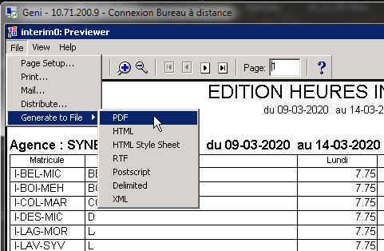
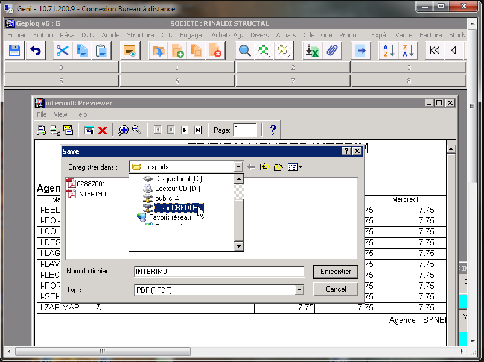

|
|||

| Autres trucs et astuces... | |
Utilisation du Geni distant
Comment imprimer un PDF ?
La méthode la plus simple est d'utiliser l'outil natif du logiciel.
Lorsque vous avez l'aperçu de votre document,
allez dans le menu en haut à gauche File > Generate to File > PDF

 Attention, lorsque le programme vous demande où enregistrer votre fichier,
Attention, lorsque le programme vous demande où enregistrer votre fichier,
les emplacements Bureau, C, sont ceux du serveur.
Sauvegardez votre fichier sur un lecteur réseau,
par exemple le Z:
(public) ou si vous avez un raccourci sur votre disque C local vous
devriez voir C sur NomduPC
